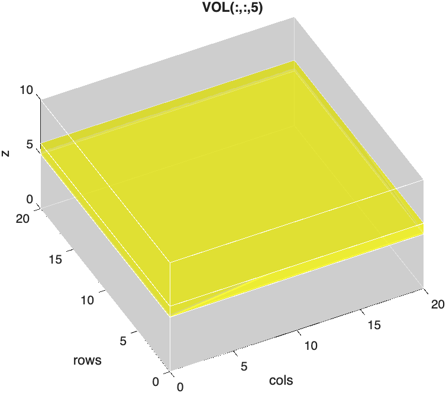
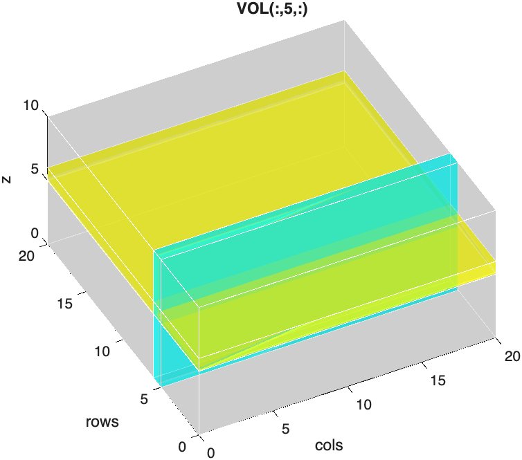
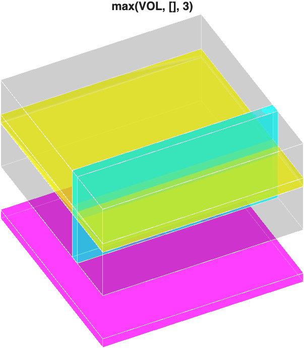

Indexing Image Stacks
Volume processing often requires indexing the stack to pull out smaller stacks or individual slices.
Indexing image stacks is fairly straightforward — you just need to keep track of the dimensions. For example, if we have a 3D volume, VOL, with dimensions 20x20x10, we can index out the fifth slice using the following syntax:

We can similarly index out an orthogonal plane:

Squeezing Out Singleton Dimensions
These two planes look similar, but MATLAB treats them differently. Compare their sizes:
The first plane is a 20x20 image. MATLAB automatically drops trailing dimensions of size 1, so indexing a single z-slice gives you a 2D matrix.
The orthogonal plane, however, is 20x1x10. Its singleton dimension (the 1) is in the middle, so MATLAB keeps it. The result is still a 3D array, even though it only contains a single plane of data. If you try to display it, you get an error:
The function squeeze removes all singleton dimensions from an array, leaving a true 2D image:
| Squeeze the orthogonal plane into a 2D image | |
|---|---|
…Now plane is a 20x10 image (20 rows by 10 slices) that you can display with imshow.
When do you need squeeze?
Use squeeze whenever you index out a single element along a dimension that is not the last one, like a single column (VOL(:,5,:)), a single row (VOL(5,:,:)), or a single color channel from a 4D stack (RGB4(:,:,1,:), below).
Indexing Sub-stacks
You don't have to index out just one slice. Using ranges, you can pull out any smaller block of the volume. For example, to crop out the center of VOL:
| Crop a sub-stack | |
|---|---|
…SUB is an 11x11x6 sub-stack. Notice that ranges include both endpoints, so 5:15 contains 11 rows.
The keyword end refers to the last index along a dimension, which saves you from having to look up the size of the stack:
| Index using end | |
|---|---|
Taking every other slice (
1:2:end) is a quick way to downsample a stack along the z-axis.
Multi-dimensional Indexing
We can use the same strategy for arrays with any number of dimensions.
Imaging datasets usually organize the data as XYCZT, where the first two dimensions are the columns and rows, and the remaining dimensions are dedicated to Color, depth (Z), and Time. Note, in MATLAB, the first two dimensions are swapped: YXCZT, or rows-columns-CZT.
So, for a 4D volume, RGB4, with the dimensions 512x512x3x12, we can index out the Red channel using the following syntax:
| Index out the Red Channel | |
|---|---|
…This returns a 4D array with just 1 channel.
Just like the orthogonal plane above, the singleton dimension (dimension three) is not the last dimension, so MATLAB keeps it. We can drop it using squeeze:
…Now RED is a 3D array.
We can index a single slice out of RED using the following syntax:
| Indexing out the Sixth Slice from RED | |
|---|---|
…redSlice is a 512x512 image.
Avoid naming variables slice
It's tempting to call a single image from a stack slice, but slice is already the name of a built-in MATLAB function (for drawing slice planes through volumes). Naming a variable slice hides that function until you clear the variable. Use a more specific name, like redSlice or slice6, instead.
If we wanted all three channels in a slice, we simply index the original, 4D volume, RGB4.
| Index out 6th Slice from RGB4 | |
|---|---|
…rgb_slice is an image with 3 channels (RGB image).
So, we can index out a color channel by accessing the third dimension and index out a z-plane by accessing the fourth dimension.
Max Projections
Indexing pulls out part of a volume. A max projection does the opposite: it collapses an entire dimension into one image by keeping only the brightest value along that dimension. You create a max projection with the max function, where the third input specifies which dimension to collapse:
| Max Projection 3D volume | |
|---|---|

The result is a 2D grayscale image (shown here as a magenta plane).
Projecting along the other dimensions works the same way, but watch out for singleton dimensions. Collapsing the first dimension leaves a 1 at the front of the array, so you need squeeze again:
size(max(VOL, [], 1))
ans =
1 20 10
size(squeeze(max(VOL, [], 1)))
ans =
20 10
We can similarly create a max projection from a 4D array across the z-dimension using the following syntax:
| Max Projection on 4D Volume | |
|---|---|
In this example, RGB4 has three channels, so the returned projection is a 3-channel array:
To see what these projections look like on real data, and how to display them, see Max Projections in Viewing Image Slices.
Challenge
Extract a green sub-stack
Using RGB4 (512x512x3x12), extract slices 4 through 8 of only the green channel, as a 3D array. What is its size?